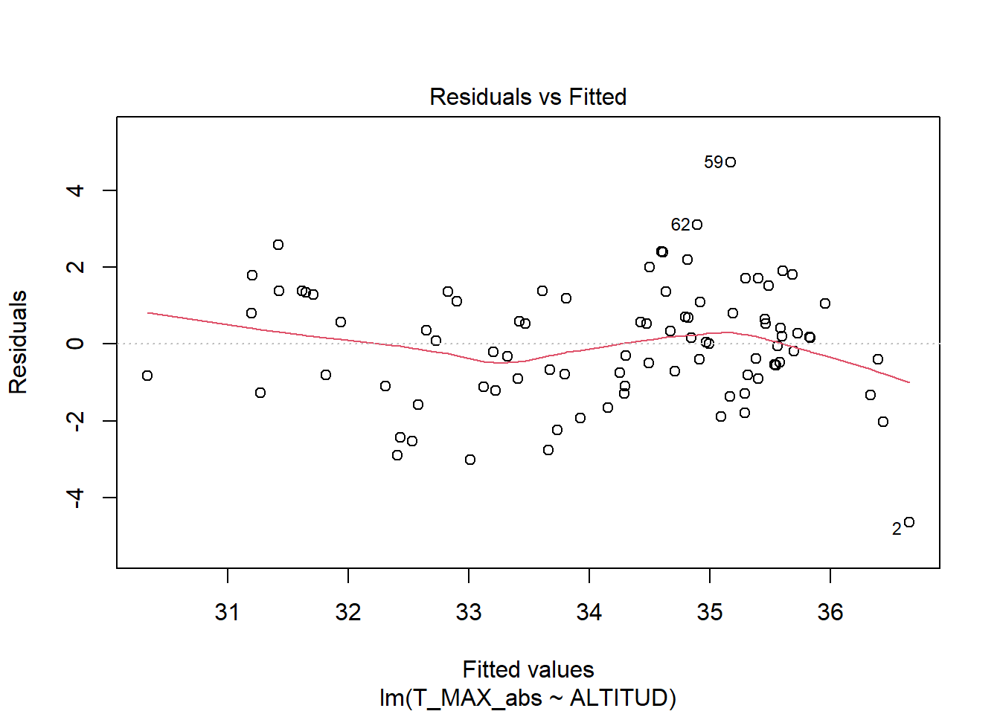
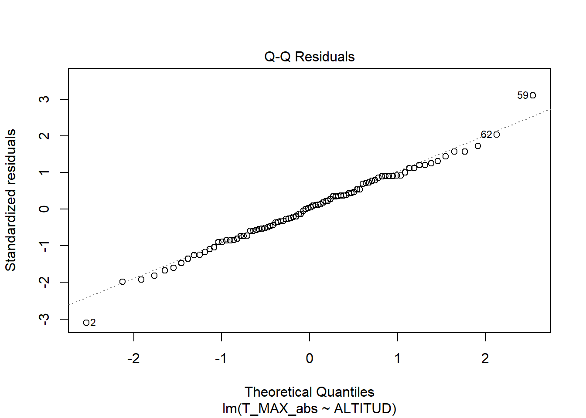
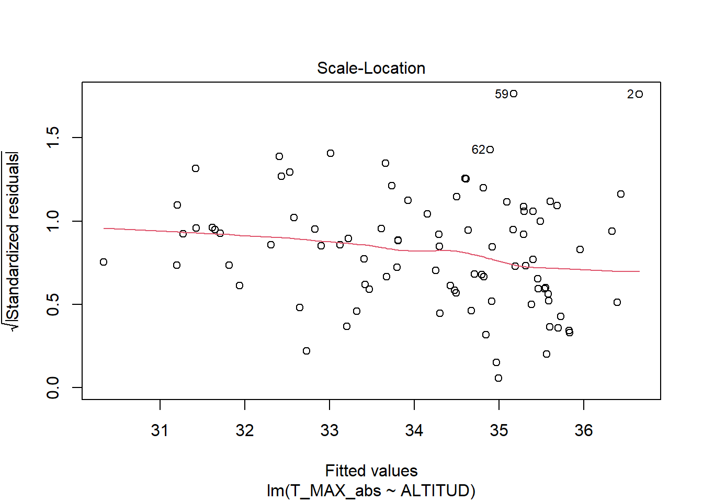
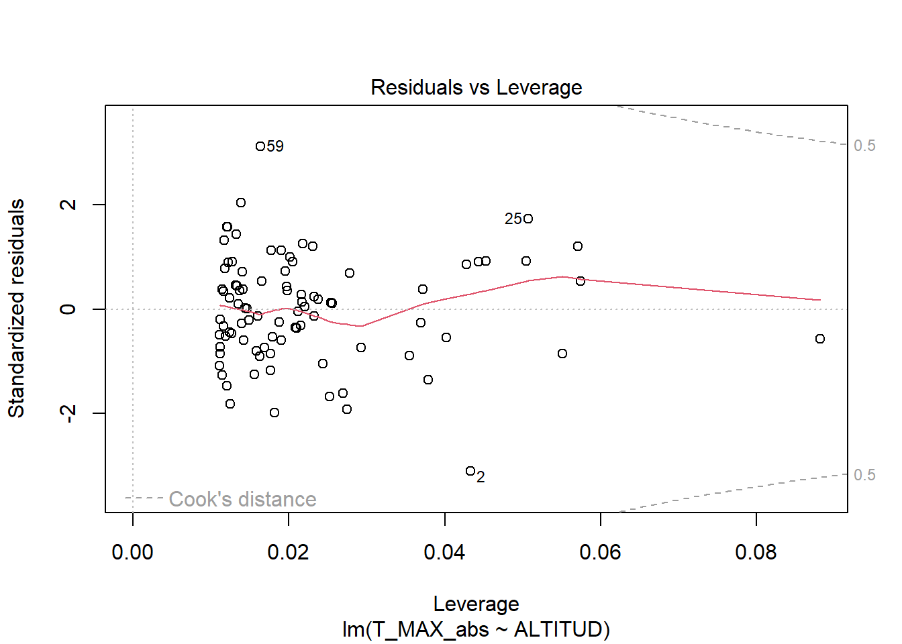
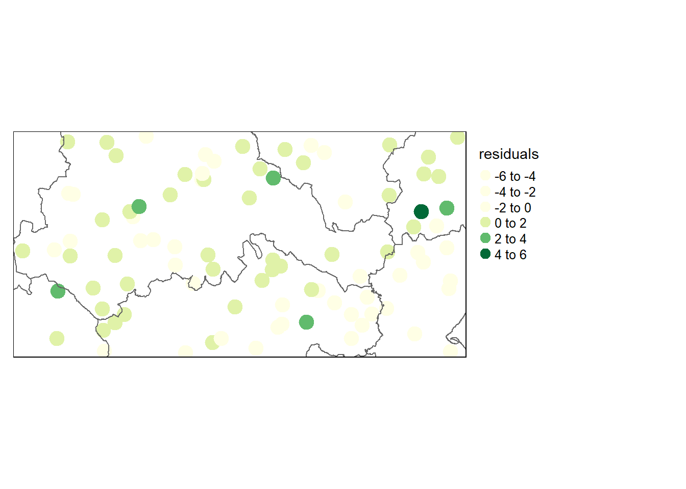

10.1 Introducción. Regresión lineal y estructura espacial
En las unidades acerca de la regresión lineal hemos visto que uno de los supuestos que deben cumplir los datos es el de independencia de los residuos. Sin embargo, sabemos por la primera ley de la geografía que las observaciones más próximas suelen ser más similares entre sí. De hecho, en el momento en que nuestros datos presenten algún tipo de estructura espacial, se inclumplirá muy probablemente el supuesto de independencia, ya que los residuos del modelo fácilmente estarán espacialmente autocorrelacionados.
Cuando realizamos una regresión lineal solíamos evaluar las asunciones utilizando los residuos. Tomemos como ejemplo los datos de estaciones meteorológicas que hemos estado trabajando durante el curso. En este caso, como tendremos en cuenta la estructura espacial, usaremos el shapefile:
Reading layer `provincias_spain' from data source
`C:\Users\Usuari\OneDrive - udl.cat\Teaching\EFCN_Geoestadística\Labs_Geoestadistica_Forestal\data\meteo\meteo_espacial\provincias_spain.shp'
using driver `ESRI Shapefile'
Simple feature collection with 51 features and 12 fields
Geometry type: MULTIPOLYGON
Dimension: XY
Bounding box: xmin: -14129.47 ymin: 3892590 xmax: 1126923 ymax: 4859517
Projected CRS: ETRS89 / UTM zone 30N
Vamos a ajustar un modelo de regresión lineal normal, como hacíamos en la primera unidad del curso. En este caso, usaremos como variable dependiente T_MAX_abs, la temperatura máxima absoluta del mes de junio en cada estación, y como variable explicativa, la elevación:
mod_lm <-lm(T_MAX_abs ~ ALTITUD, data = estaciones)summary(mod_lm)
Call:
lm(formula = T_MAX_abs ~ ALTITUD, data = estaciones)
Residuals:
Min 1Q Median 3Q Max
-4.6521 -0.9053 0.0539 1.0965 4.7273
Coefficients:
Estimate Std. Error t value Pr(>|t|)
(Intercept) 36.6718641 0.3208108 114.310 < 2e-16 ***
ALTITUD -0.0049314 0.0005468 -9.019 3.75e-14 ***
---
Signif. codes: 0 '***' 0.001 '**' 0.01 '*' 0.05 '.' 0.1 ' ' 1
Residual standard error: 1.533 on 88 degrees of freedom
Multiple R-squared: 0.4804, Adjusted R-squared: 0.4745
F-statistic: 81.35 on 1 and 88 DF, p-value: 3.746e-14
plot(mod_lm)




Vemos que el modelo parece adecuado: la variable predictora es significativa, el modelo no presenta problemas de falta de normalidad o heterocedasticidad, y además explica casi el 50% de la variabilidad en temperatura. Con lo visto hasta ahora, aceptaríamos el modelo sin ningún problema.
Sin embargo, si los datos de origen (las temperaturas) presentan autocorrelación espacial, es muy posible que los residuos del modelo también la presenten. Podemos comprobarlo, de momento visualmente. En primer lugar evaluaremos los valores de temperatura:
Es posible que haya cierta autocorrelación. Ahora veamos lo mismo para los residuos del modelo:
# Guardamos los residuos dentro del dataset espacialestaciones$residuals <-residuals(mod_lm)tm_shape(estaciones) +tm_dots( col ="residuals", palette="YlGn", size =1) +tm_legend(outside =TRUE, text.size = .8) +tm_shape(provincias) +tm_borders()

También parece que puede haber cierta autocorrelación en los residuos. Vamos a comprobarlo de manera más cuantitativa. Recordemos, del tema de autocorrelación espacial, que primero debemos crear una lista de vecinos, y luego ya podemos calcular la autocorrelación:
veins <-st_knn(estaciones, k =10)
Una vez definidos los vecinos podemos ahora testar la autocorrelación de los residuos del modelo de regresión. Para ello usaremos la función lm.morantest(), que tiene como argumentos un modelo de regresión lineal y el listado de vecinos:
Global Moran I for regression residuals
data:
model: lm(formula = T_MAX_abs ~ ALTITUD, data = estaciones)
weights: nb2listw(veins)
Moran I statistic standard deviate = 3.8269, p-value = 6.489e-05
alternative hypothesis: greater
sample estimates:
Observed Moran I Expectation Variance
0.135013008 -0.018502527 0.001609228
Vemos que aunque el valor de la I de Moran es bastante bajo 0.135, sí que resulta significativo, lo que indica que existe una cierta autocorrelación en los residuos. En consecuencia, podríamos decir que el modelo no cumple el principio de independencia de las observaciones, y deberíamos intentar tener en cuenta la estructura espacial de los datos en la regresión.
10.2 Modelos de regresión espacial
Aunque la presencia de autocorrelación en los residuos no necesariamente implica que debamos descartar el modelo, sí que podemos intentar ajustar un modelo de regresión que tenga en cuenta la estructura espacial de los datos. En realidad hay dos tipos de modelos, que difieren básicamente en cómo tratan la autocorrelación espacial de los residuos: un modelo de error espacial lo trata como si la agrupación espacial de los residuos fuera algo accidental, que se produce por azar o por variables que no hemos tenido en cuenta. Por otro lado, un modelo de lag espacial simplemente introduce la estructura espacial como un variable explicativa más en el modelo. A menudo la realidad es una combinación de los dos procesos - accidente y causa subyacente -. Podemos ajustar ambos tipos de modelo y tomar la decisión según cuál se ajusta mejor a posteriori.
10.2.1 Modelo de error espacial (Spatial error model)
Vamos a ajustar en primer lugar un modelo de error espacial, que asume que no hay causalidad en la autocorrelación de los residuos. Este modelo se construye como:
donde el término \(\lambda\omega_i\xi_i\) representa la parte “espacial” del error, que se extrae del error y se añade como una variable explicativa implícita.
Para ajustar este modelo usaremos la función errorsarlm(), del paquete spatialreg. Debemos definir la fórmula de la regresión que queremos ajustar, el dataset (estaciones), y el listado de los vecinos (list_veins)
Call:errorsarlm(formula = T_MAX_abs ~ ALTITUD, data = estaciones,
listw = list_veins, zero.policy = T)
Residuals:
Min 1Q Median 3Q Max
-4.17159 -0.81944 -0.10297 0.99736 4.56937
Type: error
Coefficients: (asymptotic standard errors)
Estimate Std. Error z value Pr(>|z|)
(Intercept) 36.77909882 0.47673440 77.1480 < 2.2e-16
ALTITUD -0.00524450 0.00071829 -7.3014 2.849e-13
Lambda: 0.49598, LR test value: 6.6032, p-value: 0.01018
Asymptotic standard error: 0.15548
z-value: 3.1901, p-value: 0.0014223
Wald statistic: 10.177, p-value: 0.0014223
Log likelihood: -161.8396 for error model
ML residual variance (sigma squared): 2.0785, (sigma: 1.4417)
Number of observations: 90
Number of parameters estimated: 4
AIC: 331.68, (AIC for lm: 336.28)
La salida de este tipo de modelo nos resultará familiar, muy similar a la de un modelo de regresión clásico. Vemos, por ejemplo, los estimadores, errores y significaciones de los coeficientes, igual que en la regresión lineal tradicional (si bien aquí no se añaden estrellas a los p-valores). El coeficiente de ALTITUD es ligeramente diferente que en el modelo tradicional.
Debajo de esta información sobre los coeficientes tenemos los valores de \(\lambda\), que sería el parámetro que multiplica al término espacial del error que hemos creado, y un test LR (likelihood ratio) para determinar si ese término espacial del error es significativo. Además se compara el modelo ajustado con el modelo de regresión lineal original via el criterio de Información de Akaike (AIC). Finalmente, se utiliza el test de Wald para comprobar si existe dependencia espacial en los residuos del modelo. Los valores significativos (< 0.05) en estos tests indica que aún existe una cierta autocorrelación que queda a pesar de usar el modelo de error espacial. En definitiva, este modelo ha mejorado en cierta medida el ajuste (se puede ver en la comparación del AIC respecto al del modelo lineal), pero que no ha abordado del todo los problemas espaciales que hemos señalado antes.
10.2.2 Spatial lag model
Ajustemos ahora un modelo de lag espacial. Este modelo añade una variable independiente adicional, que toma el valor de la media de los vecinos de cada observación. Esta variable no se mostrará en la salida de resultados “estándar”, pero el modelo de spatial lag la incluye pero la deja en un segundo plano. De esta manera, no tratamos la variable dependiente como independiente en cada observación sino que añadimos un término que asume explícitamente que las observaciones son parcialmente dependiente de los vecinos.
Call:
lagsarlm(formula = T_MAX_abs ~ ALTITUD, data = estaciones, listw = list_veins,
zero.policy = T)
Residuals:
Min 1Q Median 3Q Max
-4.162483 -0.928503 -0.019984 1.119895 4.527344
Type: lag
Coefficients: (asymptotic standard errors)
Estimate Std. Error z value Pr(>|z|)
(Intercept) 28.58681365 5.85406512 4.8832 1.044e-06
ALTITUD -0.00426025 0.00076296 -5.5838 2.353e-08
Rho: 0.22604, LR test value: 1.9639, p-value: 0.1611
Asymptotic standard error: 0.16285
z-value: 1.388, p-value: 0.16514
Wald statistic: 1.9265, p-value: 0.16514
Log likelihood: -164.1593 for lag model
ML residual variance (sigma squared): 2.2376, (sigma: 1.4959)
Number of observations: 90
Number of parameters estimated: 4
AIC: 336.32, (AIC for lm: 336.28)
LM test for residual autocorrelation
test value: 6.1901, p-value: 0.012847
Al incluir ese término de lag espacial, vemos que tanto el test de LR como el de Wald ya no detectan autocorrelación espacial. Sin mebargo, en este caso el modelo resulta muy similar al modelo lineal en términos de AIC.
10.2.3 Selección del mejor modelo
Sin embargo, no siempre pasa esto. En numerosos casos, ni el modelo de error espacial ni el de lag espacial son capaces de eliminar la autocorrelación, a pesar de reducirla. En otros casos, al contrario, ambos modelos son capaces de considerar y eliminar la autocorrelación.
Para elegir cuál es el mejor de los dos modelos, podemos usar un multiplicador de Lagrange. Este valor nos indicará si una unidad dada (una estación meteorológica) está aún influenciada por las estaciones a su alrededor incluso después de tener en cuenta y corregir la autocorrelación espacial.En lineas generales, el modelo que presenta un valor mayor del test del Multiplicador de Lagrange es el modelo más adecuado.
Para ejecutar el test del multiplicador de Lagrange usaremos la función lm.LMtests(), del paquete spatialreg. A esta función le debemos proporcionar como argumentos el modelo original (el que no tiene en cuenta la estructura espacial), el nombre del listado de vecinos, y los tipos de modelos espaciales que queremos testar (en este caso LMerr para el modelo de error espacial, y LMlag para el lag espacial):
En este caso se confirma lo que habíamos visto antes: a pesar de que el modelo de error espacial no soluciona del todo el problema de la autocorrelación, resulta un mejor modelo, y es preferible respecto al modelo de lag espacial.
10.3 Geographically weighted regression
Hemos visto que una tercera opción para tener en cuenta la estructura espacial de los datos es realizar una regresión ponderada geográficamente (geographically weighted regression). GWR es el término introducido por Fotheringham, Charlton y Brunsdon (1997, 2002) para describir una familia de modelos de regresión en los que se permite que los coeficientes varíen espacialmente. GWR funciona moviendo una ventana de búsqueda (kernel) de un punto de la muestra al siguiente, trabajando secuencialmente a través de todos los puntos existentes en el conjunto de datos. A continuación, se ajusta un modelo de regresión a todos los datos contenidos en la ventana identificada alrededor de cada punto, ponderando más los puntos de datos más cercanos al punto de muestra que los más alejados. Este proceso se repite para todos los puntos del conjunto de datos. Para un conjunto de datos de 150 observaciones, GWR ajustará 150 modelos de regresión ponderados. La diferencia de este método respecto a los anteriores es que no asume que la relación entre y y x es constante en toda la zona de estudio, e incluso permite que haya cambios de signo locales en la relación entre ambas. Por todo ello se suele considerar el método más flexible.
10.3.1 Kernel fijo o variable
Una cuestión clave es decidir entre dos opciones de kernels espaciales: un kernel fijo o un kernel adaptativo o variable. Intuitivamente, un kernel fijo implica el uso de un ancho de banda fijo para definir una región alrededor de cada uno los puntos de regresión, como se muestra en la Figura de abajo. La extensión del kernel viene determinada por la distancia al punto para el que se quiere ajustar la regresión, siendo el kernel idéntico en cualquier punto del espacio. Un kernel adaptativo implica el uso de un ancho de banda variable para definir una región alrededor de los puntos de regresión, tal y como se muestra abajo. La extensión del kernel viene determinada por el número de vecinos más próximos de un punto de regresión dado. Los kernel variables tienen anchos de banda mayores cuando los datos son escasos.
Fig.1 Ejemplo de kernel con amplitud de banda fija
Fig.2 Ejemplo de kernel con amplitud de banda variable
10.3.2 Optimizando la amplitud de banda del kernel
El primer paso para ajustar una GWR es determinar el ancho de banda que se utilizará para seleccionar las sucesivas muestras. Esto lo haremos con la función gwr.sel() del paquete spgwr. Esta función ncesita que le especifiquemos la fórmula del modelo a ajustar y el dataset, pero además tiene un argumento más (adapt) para definir el tipo de ancho de banda a usar para definir la muestra de cada modelo de regresión parcial que ajustemos. Dicho ancho de banda puede ser fijo (adapt = FALSE) o variable (adapt = TRUE).
10.3.2.1 GWR con ancho de banda fijo
Si ajustamos un ancho de banda fijo el resultado de la función gwr.sel es una distancia de muestreo. Lo que hace la función es ajustar modelos con diferentes anchos de banda y compara los residuos por validación cruzada. El resultado será la distancia que minimiza los residuos.
# Ancho de banda fijokernel_fijo <-gwr.sel(T_MAX_abs ~ ALTITUD, data=estaciones, coords =st_coordinates(estaciones), adapt=FALSE)
En este caso vemos que el ancho previsto son 1.7302891^{4} metros.
Podemos ahora ajustar el modelo GWR mediante la función gwr, en la que el ancho de banda óptimo anterior se utiliza como entrada en el argumento bandwidth.
Vemos que ahora no tenemos un sólo valor de los parámetros del modelo, como habitualmente, sino una serie de valores, de los que el otuput nos informa del mínimo, cuartiles y máximo. Los valores globales de los coeficientes coincidirán con los del modelo de regresión no espacial. Después veremos como interpretar algunos de estos resultados, de momento vamos a tomar los coeficientes, que se guardan en un spatialDataFrame (SDF) dentro del objeto del modelo. Este SDF contiene los coeficientes del modelo (que se guardan con el nombre de la variable a que multiplican), el error estandard de los coeficientes, las predicciones, y los valores de R2 de cada uno de los n modelos ajustados:
View(gwr.model$SDF@data)
Podemos guardar los coeficientes estimados con nuestro dataset original (estaciones), para así poder plotear los valores:
Variable(s) "ALTITUD.1" contains positive and negative values, so midpoint is set to 0. Set midpoint = NA to show the full spectrum of the color palette.
Vemos que, si bien la mayoría de los valores del coeficiente entre altitud y temperatura son negativos (lo que cabría esperar), algunos son incluso positivos. En concreto, los de la zona más norte del valle del Ebro, en la provincia de Zaragoza. Podemos plotear también los valores locales de R2
Vemos que los valores de R2 son razonablemente altos para la mayoría de los puntos, salvo en una zona del norte del Ebro (no la misma que tenía valores positivos de los coeficientes). En los GWR de ancho de banda fijo, esto pasa a veces en zonas con menor densidad de puntos, donde el modelo se ajusta con menor muestra. Veamos si cambian los resultados con un modelo de ancho de banda variable:
10.3.2.2 GWR con ancho de banda variable
Los anchos de banda variables adaptan su tamaño a la densidad de puntos existente, de manera que se hacen más amplios en las zonas donde hay menos muestra y más estrechos en zonas con más densidad de puntos. Como antes, el primer paso es calcular el valor óptimo:
Esto quiere decir que el kernel óptimo es el que incluye un 2.8% (3%) de las observaciones vecinas en cada punto. Parece que con considerar los 3 vecinos más próximos a cada estación es suficiente para tener un modelo adecuado. Podemos ahora ajsutar el modelo de ancho variable, con la diferencia que ahora debemos usar el kernel que acabamos de estimar dentro del argumento adapt:
Variable(s) "ALTITUD.1" contains positive and negative values, so midpoint is set to 0. Set midpoint = NA to show the full spectrum of the color palette.
Quizá el contraste entre los valores negativos y positivos de los coeficientes sea incluso más marcado. Veamos si se ha mejorado la estimación de R2 de los puntos donde teníamos valores bajos:
Parece que no, por lo que el bajo R2 no se debería a una escasez de datos, sino a que en aquella zona la relación entre altitud y temperatura es más débil. Esto puede tener sentido en zonas llanas junto a los ríos, donde incluso es común tener fenómenos de inversión térmica que trastocan la relación negativa entre ambas variables, la más habitual y esperada.